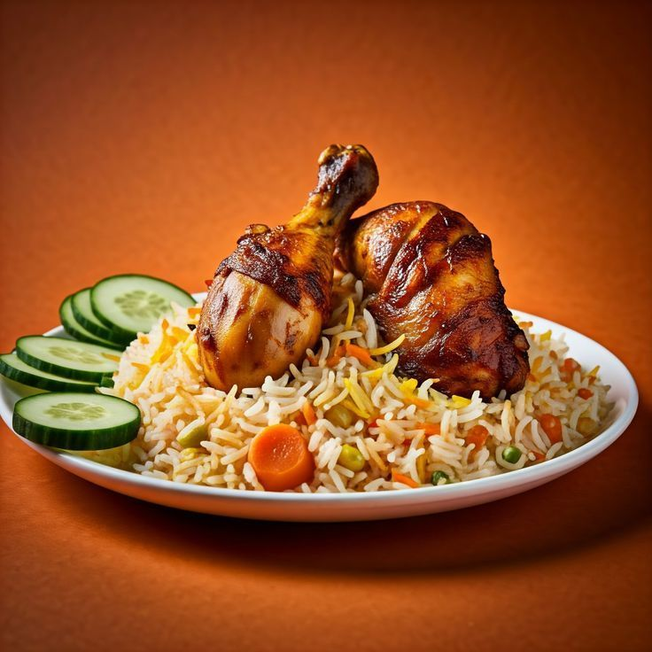

Arabian Mandi

Arabian Mandi is a signature Yemeni rice dish consisting of highly tender
meat—typically lamb or chicken—served over fragrant Basmati rice lightly
spiced with hawaij (a mix of cumin, coriander, cardamom, and black
pepper). Traditionally slow-cooked underground in a sealed clay pit, the
dripping juices and smoke from charcoal flavor the rice below, resulting
in a mildly spiced, deeply flavorful meal garnished with toasted nuts and
served with a tangy tomato-chili sauce (sahawiq).
Ingredient List:
- Base: Basmati rice, chicken/lamb, water, ghee/oil.
-
Mandi Spice Mix: Cumin, coriander, black pepper, cardamom, cloves,
cinnamon, nutmeg, dry lime (loomi).
-
Aromatics: Onions, garlic, green chillies, saffron (or yellow food
color).
- Garnish: Fried raisins, toasted almonds/cashews.
-
Sahawiq Sauce: Fresh tomatoes, garlic, green chillies, coriander, lemon
juice.
Simple Steps to Make:
- Rub meat with oil, Mandi spices, garlic, lemon juice, and salt.
-
Sauté onions, garlic, green chillies, and whole spices in a pot; add
soaked Basmati rice and water.
-
Place a wire rack over the rice pot, set meat on top, cover tightly, and
bake or slow-cook until meat is tender and juices drip into the rice.
-
Place a glowing piece of charcoal in a foil cup inside the pot, drizzle
with ghee, and seal for 5 minutes to infuse smoke.
-
Fluff rice, drizzle with saffron water, top with meat, and garnish with
fried raisins and toasted nuts. Serve with sahawiq sauce.
To go back
Click here